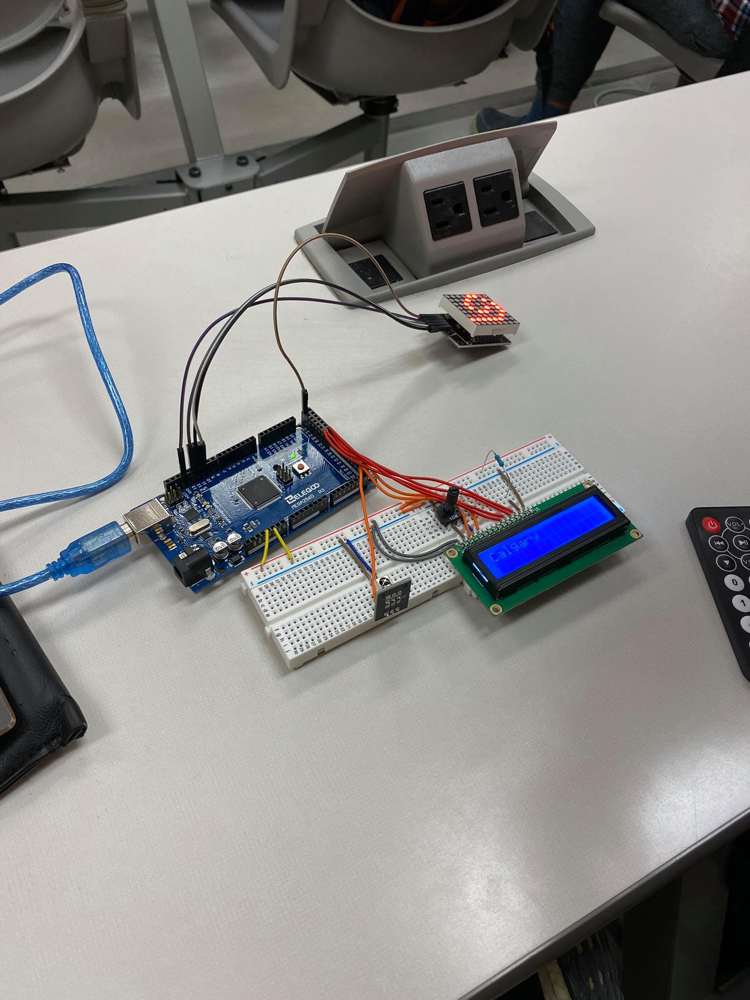
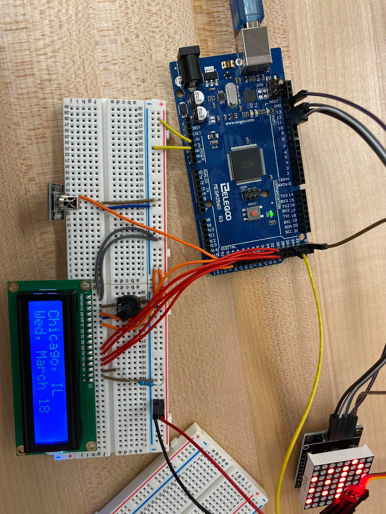

Davis Roman
PortfolioCPSC 599: Assignment 3
Summary:
Assignment three of CPSC 599, Physical and Tangible HCI, focuses on developing our understanding of arduino and TUI's through the additional of physical movement to our creations. The main goal for this project was to include something that moved, and in doing so could convey some sort of meaning to the audience/users. Our implementation, 'Family Forecast' provides and easy to understand interface that displays the temperature and weather for the next ten days at locations that are meaninful to the user. Below are images of the development process, a video of the final prototype, as well as the code and schematics for the system.
Photos:
Initial Development:
 Internal of Encapsulation:
Final Prototype:
Video (Final Prototype):
Code:
To view the code for the above project, click here.
Circuit Schematic / Breadboard Schematic:
Circuit Schematic:
Breadboard Schematic:
To download the Fritzing file containing both schematics, click here.
References:
LCD Screen:
- https://www.arduino.cc/en/Tutorial/HelloWorld
IR Reciever:
- https://www.circuitbasics.com/arduino-ir-remote-receiver-tutorial/
Gary:
- https://pinshape.com/items/15344-3d-printed-wip-tiny-articulated-bot